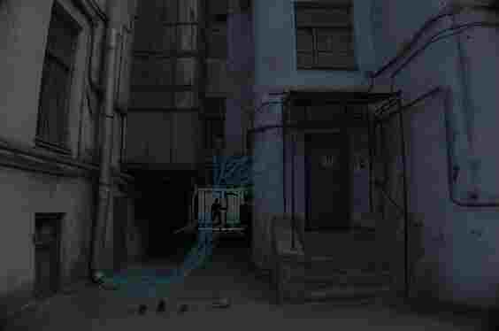
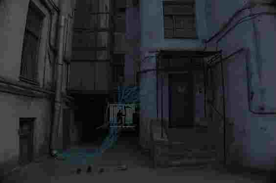

folia.pl - forum, na którym nikt cię nie uciszy.
Temat: Moje ostatnie znaleziska(wyświetlono 493 razy)

Jako że dziś wreszcie będe mieć czas coś wrzucić, to zakładam wątek o moich ostatnich znaleziskach w Wajdelinie!!!
Jest ich całkiem sporo, więc rozbije to na pare postów, aż sam sie zdziwiłem o_0 No to zacznijmy od tego dziwacznego kwiatka.
Fotka strzelona pod Rowokołem jakiś czas temu, takich kwiatków było tam więcej ale byłem zbyt zajęty piciem piwa i paleniem papierosów z kolegami więc się nie skupiłem na tym.
Myślę, że to może być znak, że gdzieś w Wajdelinie rząd ukrywa elektrowanie atomową, nie ma innego wytłumaczenia na tak czadersko zmutowaną stokrotkę...
Tylko kto by to opłacił? Miasto? Ukryty Żąd przez duże Ż?
Coś tu śmierdzi i to nie jest ta ryba <º))))><
Pozdrawiam, Bielik99.
Jest ich całkiem sporo, więc rozbije to na pare postów, aż sam sie zdziwiłem o_0 No to zacznijmy od tego dziwacznego kwiatka.
Fotka strzelona pod Rowokołem jakiś czas temu, takich kwiatków było tam więcej ale byłem zbyt zajęty piciem piwa i paleniem papierosów z kolegami więc się nie skupiłem na tym.
Myślę, że to może być znak, że gdzieś w Wajdelinie rząd ukrywa elektrowanie atomową, nie ma innego wytłumaczenia na tak czadersko zmutowaną stokrotkę...
Tylko kto by to opłacił? Miasto? Ukryty Żąd przez duże Ż?
Coś tu śmierdzi i to nie jest ta ryba <º))))><
Pozdrawiam, Bielik99.
To zdjęcie to jest niezła faza... Strzelone w Lubieszowie!!! Załatwiałem pare spraw wieczorem i wpadłem na coś takiego...
Mężczyzna umięsmiony wydaje mi się że ma kitkę? Pedał. Z kosą jakąś, pokonał jakąś kreature z plazmy kosmicznej energii.
Myśle że kosmici są wśrod nas ale ktoś ich ukrywa i zabija? Czemu nie robią tego gnatami??????? Troche debilizm
Albo to jakaś magia? Czarodziej zabijający duchy jak w jakiejś grze na plejaka? Dużo poszlak zapraszam was żebyście tam szli i to sprawdzili sami, może pojawi się tam znowu i nam coś opowie ten homokosiarz z lubieszowa

Mężczyzna umięsmiony wydaje mi się że ma kitkę? Pedał. Z kosą jakąś, pokonał jakąś kreature z plazmy kosmicznej energii.
Myśle że kosmici są wśrod nas ale ktoś ich ukrywa i zabija? Czemu nie robią tego gnatami??????? Troche debilizm
Albo to jakaś magia? Czarodziej zabijający duchy jak w jakiejś grze na plejaka? Dużo poszlak zapraszam was żebyście tam szli i to sprawdzili sami, może pojawi się tam znowu i nam coś opowie ten homokosiarz z lubieszowa

Słuchajcie dzisiaj jak wstałem do nawet nie zjadlem śniadania żeby wrzucić to jak najszybciej mam taką teorie tylko musicie usłyszeć zdjęcie jest ucięte przybliżone żebyscie to zobaczyli sami ale tutaj jest błona jakaś?
Jakiś utopiec chyba topielec ale żeby był topilec no to trzeba sie zabić a chyba nikt nie jest taki głupi takie rzeczy są tylko w filmach może to jakiś kosmita jaszczurka słyszałem że talmudzi ukrywają takich po kątach.
Zdjęcie zrobione na obrzeżach Lubieszowa na takich zadupiu gdzieś niedaleko takich ruin nawiedzonych nie pamiętam dokładnie gdzie ale może ten dziwoląg tam gdzieś mieszka szukajcie go trzeba go przepytać z jakiej planety przybył. Będe wrzucać więcej jak coś znajde i wymyśle teorie.
Jakiś utopiec chyba topielec ale żeby był topilec no to trzeba sie zabić a chyba nikt nie jest taki głupi takie rzeczy są tylko w filmach może to jakiś kosmita jaszczurka słyszałem że talmudzi ukrywają takich po kątach.
Zdjęcie zrobione na obrzeżach Lubieszowa na takich zadupiu gdzieś niedaleko takich ruin nawiedzonych nie pamiętam dokładnie gdzie ale może ten dziwoląg tam gdzieś mieszka szukajcie go trzeba go przepytać z jakiej planety przybył. Będe wrzucać więcej jak coś znajde i wymyśle teorie.